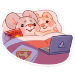

в мире бесконечное количество мест, а я хочу быть рядом с тобой. как пелось в одной из моих любимых песен,
"так больно, когда города нас хотят разорвать". ой к слову о музыке! она бы часто у нас звучала -
пока я делаю что-нибудь на кухне или купаюсь, например. я ещё пою в душе, хаха. но при тебе не буду, наверное.
так будет честно, если я не даю тебе петь, то и сама не буду. но и твою музыку мы бы слушали, разумеется. а ещё вместе смотрели бы мои любимые передачи типа "беременна в 16".
ещё всякие криминальные видево. и документалки про подводный мир! любишь документалки? ну и конечно всякие аниме.
но мне достаточно и того, что счастье - это то, что я провожу эту зиму с тобой

Назад